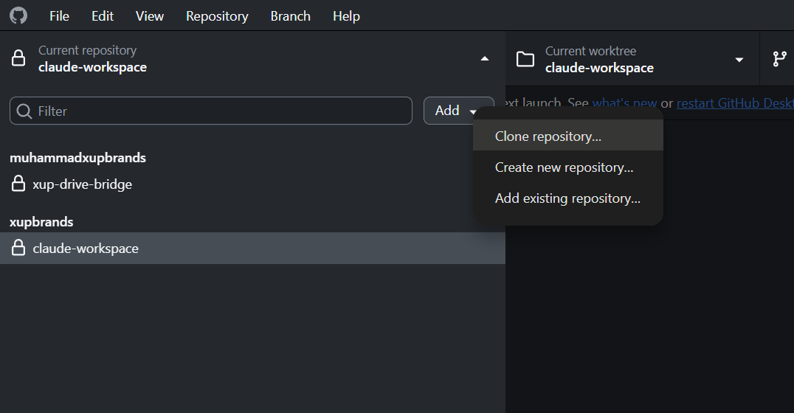
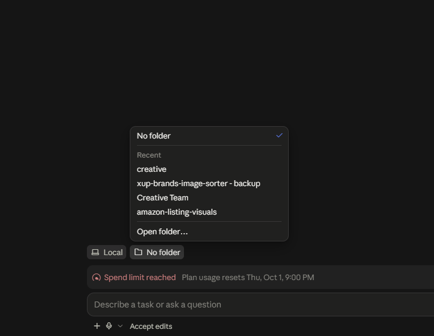

Create GitHub account
Make the account your X UP administrator will approve.
Show details
Enable two-factor authentication and send your GitHub username to the administrator.
X UP Brands · Internal guide
Complete the actions, then work from the right local context.
Do these in order
Use private access only. Keep credentials, customer data, and API keys out of notes, prompts, and commits.
Only required steps count here. Git and Obsidian are optional and never block setup.
Make the account your X UP administrator will approve.
Enable two-factor authentication and send your GitHub username to the administrator.
Accept your organization invitation before cloning.
Private repositories stay hidden until your access is approved.
Only useful for command-line GitHub work.
Git is optional for this setup. You only need it for command-line/CLI GitHub work; GitHub Desktop can handle the visual clone workflow without it.
Use it to pull, commit, and push safely.
Use your assigned agent with the right context.
Claude Code works with files in your local workspace.
Only install it for easier Markdown browsing.
Make the approved private repository local.
In GitHub Desktop, choose Add, then Clone repository…. Select the X UP repository you have permission to access, then choose the local folder where it will be stored.

git clone <REMOTE-URL-PROVIDED-BY-X-UP-ADMIN> <LOCAL-FOLDER>Select your Claude workplace folder in Claude Code.
Use the lower-left folder selector, choose Open folder…, then select your cloned X UP folder as the Claude workplace folder.

Run it only after your Claude workplace folder is open.
After cloning the repository and opening your Claude workplace folder in Claude Code, run this command. It builds the correct department starting context.
/onboard-meOpen the clone as a vault if you use Obsidian.
Choose Open folder as vault and preserve the repository’s .obsidian folder.
Daily loop
Specific, department-appropriate output beats generic chat.
After cloning, open your Claude workplace folder in Claude Code.
First time only: run /onboard-me, then read relevant SOPs.
Review and keep only intentional edits.
Use a short message that explains the change.
Leave sensitive data out of files and prompts.
Pull first. Keep .obsidian. Never paste or commit passwords, API keys, customer data, tokens, or other sensitive information. For a focused Claude request, name the department, brand, deliverable, and constraints.
Read the [department] context and relevant SOP. Draft a specific [deliverable] for [brand]. Flag missing facts instead of inventing them.Who to call
Use the network map to find the owning department, then select the character or brand desk that owns the work. Each node below includes its accountability and the right reason to call.
Solid connectors show ownership paths. Compact nodes show the first routing choice; the full nodes below describe each accountability.
Portfolio strategy and brand-level campaign execution
Owns cross-brand strategy, team performance, launch coordination, and portfolio TACOS oversight.
Daily PPC execution for MagnetRX.
Daily PPC execution for TheraCopper.
Daily PPC execution for RTZN.
Daily PPC execution for GrifGrips.
Daily PPC execution for Boost Patches.
Daily PPC execution for TeraRX.
Daily PPC execution for ERND.
Daily PPC execution for Mezcasa.
For a brand campaign, call that brand’s PPC desk. For a portfolio decision or launch coordination, call Rex.
Conversion-first brand and DTC creative
Owns Amazon listings, A+ content, packaging, storefronts, DTC assets, video, and visual standards across all brands.
Owns DTC graphic execution: Meta ads, email graphics, website design, social posts, and Higgsfield AI video.
Channel growth, email, search content, organic social, and creator outreach
Owns Shopify performance, TikTok Shop, paid social, Google Ads, creator partnerships, channel coordination, and DTC reporting.
Owns list growth, Klaviyo flows, campaigns, deliverability, and email revenue across the portfolio.
Owns search content that earns visibility in Google, AI Overviews, ChatGPT, and Perplexity while staying brand-accurate.
Owns organic TikTok and Instagram planning, trend research, brand-driven posting, and creator outreach.
Inventory, catalogue integrity, and fulfillment reliability
Owns inventory health, supply chain execution, Amazon catalogue integrity, FBA inbound, and fulfillment performance.
Validated product opportunities through launch readiness
Owns opportunity validation, sourcing, samples, specifications, product differentiation, and cross-functional launch readiness.
Customer intelligence and durable operating knowledge
Owns Amazon and DTC support, review recovery, complaint intelligence, order issues, refunds, and replacements.
Owns SOPs, playbooks, onboarding documentation, and knowledge capture across departments.
Quick reference
Short definitions for the terms you will meet most often.
Optional command-line version history.
Use Git for CLI GitHub work. It is not required for the visual GitHub Desktop clone workflow.
Private team repository home.
GitHub Desktop is the visual app for working with the private repository.
Visual Git workflow.
Use it to clone, pull, commit, and push without installing Git for command-line use.
Project folder plus history.
Clone makes your first local copy; pull updates it.
Save and share changes.
A commit is a named checkpoint; push sends it to GitHub.
Simple text formatting.
It powers headings, links, lists, and checklists in notes.
Optional Markdown viewer/editor.
Only install Obsidian if you want an easier way to browse and read the .md knowledge files. It can open the clone as a vault.
AI help beside local files.
Open the cloned X UP folder as your Claude workplace folder first.
Guided first-agent setup.
Run it only after cloning the repository and opening your Claude workplace folder in Claude Code.
What AI can consider now.
Keep requests focused and point to the right material.
Your instruction and its text units.
Name the task, audience, constraints, and desired output.
A work conversation and its role.
Use the appropriate department agent instead of generic chat.
Reusable method and knowledge base.
They ground work in company, brand, and SOP context.
Record of work done.
It supports review, continuity, and handover.
Optional, not core setup.
Use it later for approved automation or scripts—not for this initial setup.